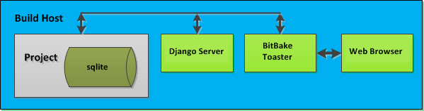
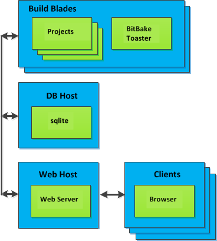
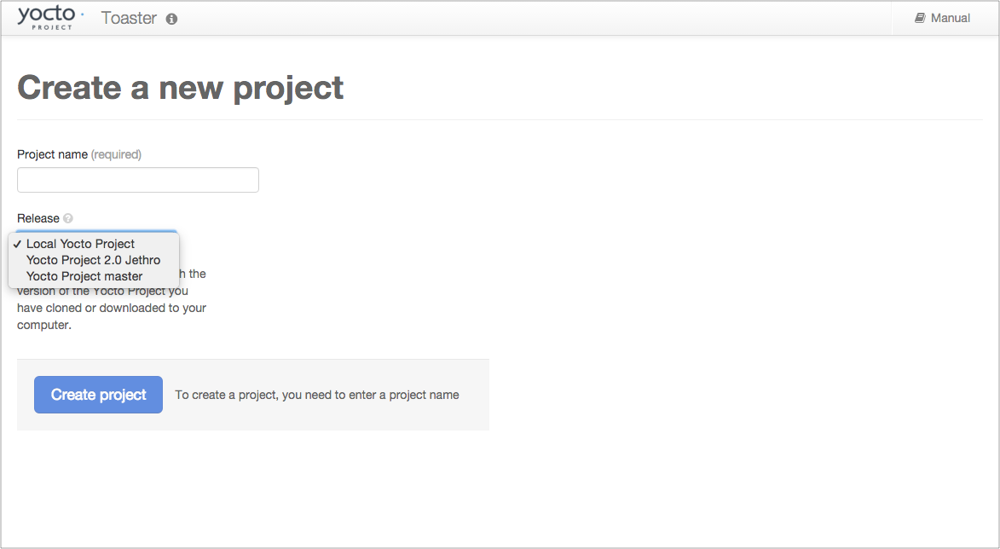
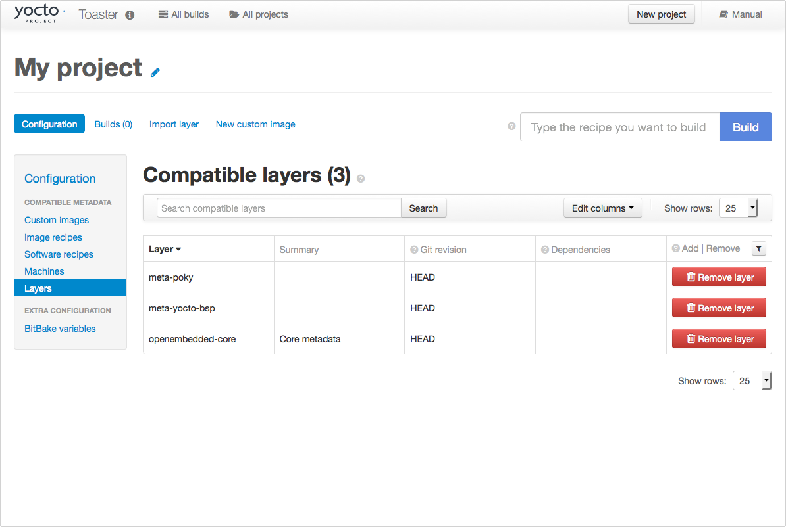
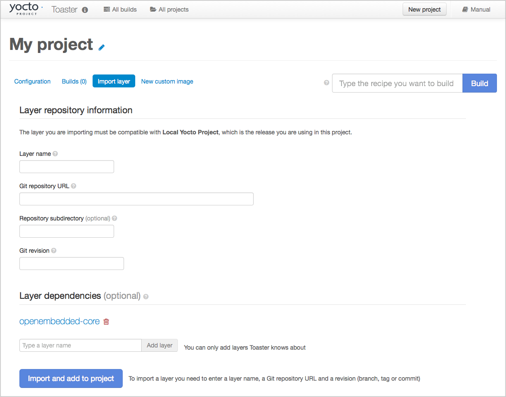
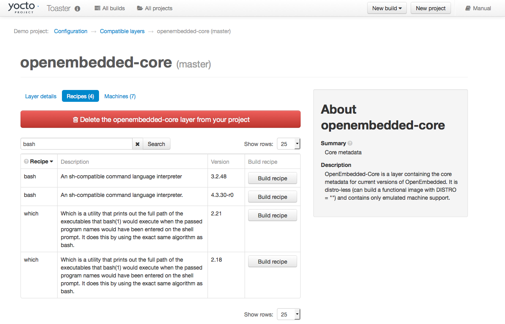
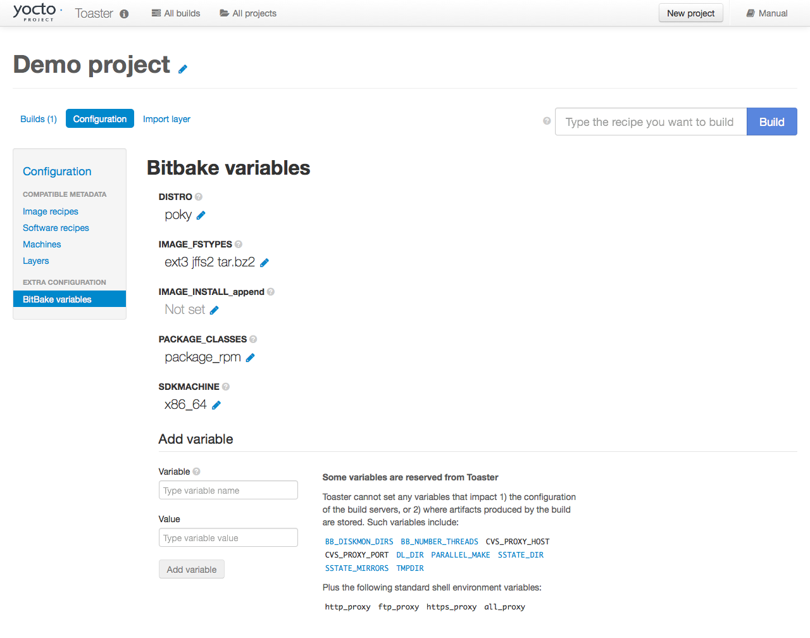
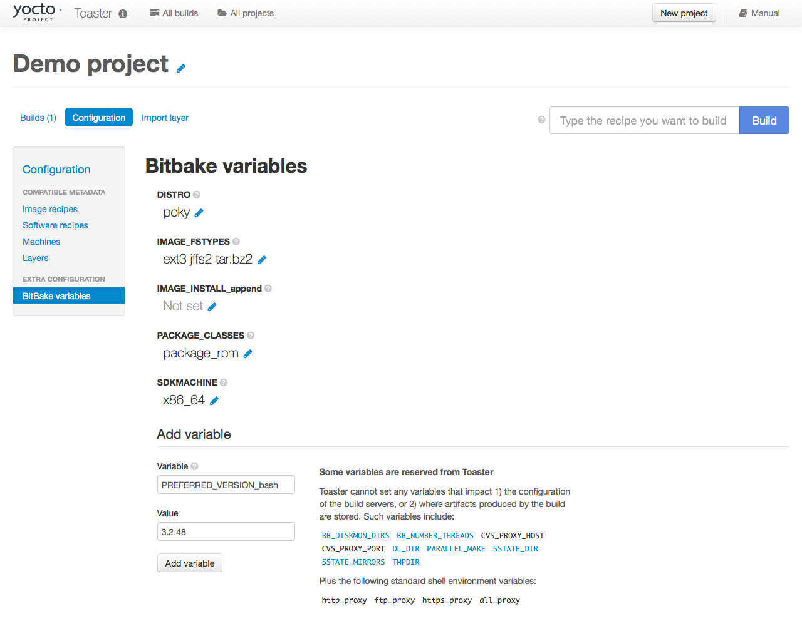
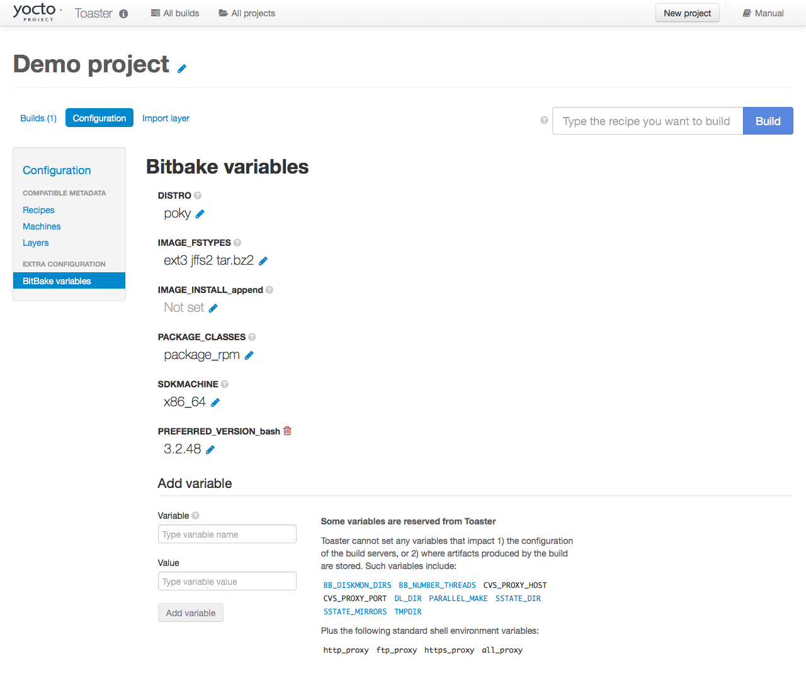

Copyright © 2010-2017 Linux Foundation
Permission is granted to copy, distribute and/or modify this document under the terms of the Creative Commons Attribution-Share Alike 2.0 UK: England & Wales as published by Creative Commons.
For the latest version of the Yocto Project Toaster User Manual associated with this Yocto Project release (version 2.3), see the Yocto Project Toaster User Manual from the Yocto Project documentation page.
This version of the manual is version 2.3. For later releases of the Yocto Project (if they exist), go to the Yocto Project documentation page and use the drop-down "Active Releases" button and choose the Yocto Project version for which you want the manual.
For an in-development version of the Yocto Project Toaster User Manual, see http://www.yoctoproject.org/docs/latest/toaster-manual/toaster-manual.html.
| Revision History | |
|---|---|
| Revision 1.8 | April 2015 |
| Released with the Yocto Project 1.8 Release. | |
| Revision 2.0 | October 2015 |
| Released with the Yocto Project 2.0 Release. | |
| Revision 2.1 | April 2016 |
| Released with the Yocto Project 2.1 Release. | |
| Revision 2.2 | October 2016 |
| Released with the Yocto Project 2.2 Release. | |
| Revision 2.3 | May 2017 |
| Released with the Yocto Project 2.3 Release. | |
Table of Contents
Table of Contents
Toaster is a web interface to the Yocto Project's OpenEmbedded build system. The interface enables you to configure and run your builds. Information about builds is collected and stored in a database. You can use Toaster to configure and start builds on multiple remote build servers.
Toaster allows you to configure and run builds, and it provides extensive information about the build process.
Configure and Run Builds: You can use the Toaster web interface to configure and start your builds. Builds started using the Toaster web interface are organized into projects. When you create a project, you are asked to select a release, or version of the build system you want to use for the project builds. As shipped, Toaster supports Yocto Project releases 1.8 and beyond. With the Toaster web interface, you can:
Browse layers listed in the various layer sources that are available in your project (e.g. the OpenEmbedded Metadata Index at http://layers.openembedded.org/layerindex/).
Browse images, recipes, and machines provided by those layers.
Import your own layers for building.
Add and remove layers from your configuration.
Set configuration variables.
Select a target or multiple targets to build.
Start your builds.
Toaster also allows you to configure and run your builds from the command line, and switch between the command line and the web interface at any time. Builds started from the command line appear within a special Toaster project called "Command line builds".
Information About the Build Process: Toaster also records extensive information about your builds. Toaster collects data for builds you start from the web interface and from the command line as long as Toaster is running.
With Toaster you can:
See what was built (recipes and packages) and what packages were installed into your final image.
Browse the directory structure of your image.
See the value of all variables in your build configuration, and which files set each value.
Examine error, warning, and trace messages to aid in debugging.
See information about the BitBake tasks executed and reused during your build, including those that used shared state.
See dependency relationships between recipes, packages, and tasks.
See performance information such as build time, task time, CPU usage, and disk I/O.
For an overview of Toaster shipped with the Yocto Project 2.3 Release, see the "Toaster - Yocto Project 2.2" video.
You can set Toaster up to run as a local instance or as a shared hosted service.
When Toaster is set up as a local instance, all the components reside on a single build host. Fundamentally, a local instance of Toaster is suited for a single user developing on a single build host.
|  |
Toaster as a hosted service is suited for multiple users developing across several build hosts. When Toaster is set up as a hosted service, its components can be spread across several machines:
|  |
Table of Contents
This chapter describes how you need to prepare your system in order to use Toaster.
Before you can use Toaster, you need to first set up your build system to run the Yocto Project. To do this, follow the instructions in the "The Build Host Packages" and "Yocto Project Release" sections in the Yocto Project Quick Start. For Ubuntu/Debian, you might also need to do an additional install of pip3.
$ sudo apt-get install python3-pip
Toaster requires extra Python dependencies in order to run.
A Toaster requirements file named
toaster-requirements.txt defines the
Python dependencies.
The requirements file is located in the
bitbake directory, which is located in the
root directory of the
Source Directory
(e.g. poky/bitbake/toaster-requirements.txt).
The dependencies appear in a pip,
install-compatible format.
You need to install the packages that Toaster requires. Use this command:
$ $ pip3 install --user -r bitbake/toaster-requirements.txt
The previous command installs the necessary Toaster modules
into a local python 3 cache in your
$HOME directory.
The caches is actually located in
$HOME/.local.
To see what packages have been installed into your
$HOME directory, do the following:
$ pip3 list installed --local
If you need to remove something, the following works:
$ pip3 uninstall PackageNameToUninstall
Table of Contents
Once you have set up the Yocto Project and installed the Toaster system dependencies as described in "Preparing to Use Toaster", you are ready to start Toaster.
Navigate to the root of your
Source Directory
(e.g. poky):
$ cd poky
Once in that directory, source the build environment script:
$ source oe-init-build-env
Next, from the build directory (e.g.
poky/build), start Toaster using this
command:
$ source toaster start
You can now run your builds from the command line, or with Toaster as explained in section "Using the Toaster Web Interface".
To access the Toaster web interface, open your favorite browser and enter the following:
http://127.0.0.1:8000
By default, Toaster starts on port 8000.
You can use the WEBPORT parameter to
set a different port.
For example, the following command sets the port to "8400":
$ source toaster start webport=8400
By default, Toaster binds to the loop back address
(i.e. localhost).
You can use the WEBPORT parameter to
set a different host.
For example, the following command sets the host and port
to "0.0.0.0:8400":
$ source toaster start webport=0.0.0.0:8400
Toaster creates a _toaster_clones
directory inside your Source Directory
(i.e. poky) to clone any layers
needed for your builds.
Alternatively, if you would like all of your Toaster related
files and directories to be in a particular location other than
the default, you can set the TOASTER_DIR
environment variable, which takes precedence over your current
working directory.
Setting this environment variable causes Toaster to create and use
$TOASTER_DIR./_toaster_clones.
Toaster creates a build directory within your Source
Directory (e.g. poky) to execute
the builds.
Alternatively, if you would like all of your Toaster related files
and directories to be in a particular location, you can set
the TOASTER_DIR environment variable,
which takes precedence over your current working directory.
Setting this environment variable causes Toaster to use
$TOASTER_DIR/build as the build directory.
Toaster is built on the Django framework. Django provides an administration interface you can use to edit Toaster configuration parameters.
To access the Django administration interface, you must create a superuser by following these steps:
If you used pip3, which is
recommended, to set up the Toaster system dependencies,
you need be sure the local user path is in your
PATH list.
To append the pip3 local user path, use the following
command:
$ export PATH=$PATH:$HOME/.local/bin
From the directory containing the Toaster database,
which by default is the
Build Directory,
invoke the createsuperuser command
from manage.py:
$ cd ~/poky/build
$ ../bitbake/lib/toaster/manage.py createsuperuser
Django prompts you for the username, which you need to provide.
Django prompts you for an email address, which is optional.
Django prompts you for a password, which you must provide.
Django prompts you to re-enter your password for verification.
After completing these steps, the following confirmation message appears:
Superuser created successfully.
Creating a superuser allows you to access the Django administration interface through a browser. The URL for this interface is the same as the URL used for the Toaster instance with "/admin" on the end. For example, if you are running Toaster locally, use the following URL:
http://127.0.0.1:8000/admin
You can use the Django administration interface to set Toaster configuration parameters such as the build directory, layer sources, default variable values, and BitBake versions.
You can use a production instance of Toaster to share the Toaster instance with remote users, multiple users, or both. The production instance is also the setup that can handle heavier loads on the web service. Use the instructions in the following sections to set up Toaster to run builds through the Toaster web interface.
Be sure you meet the following requirements:
mod-wsgi, and Mysql requirements.
Have all the build requirements as described in "Setting Up the Basic System Requirements" chapter.
Have an Apache webserver.
Have mod-wsgi for the Apache
webserver.
Use the Mysql database server.
If you are using Ubuntu 16.04, run the following:
$ sudo apt-get install apache2 libapache2-mod-wsgi-py3 mysql-server python3-pip libmysqlclient-dev
If you are using Fedora 24 or a RedHat distribution, run the following:
$ sudo dnf install httpd python3-mod_wsgi python3-pip mariadb-server mariadb-devel python3-devel
If you are using openSUSE Leap 42.1, run the following:
$ sudo zypper install apache2 apache2-mod_wsgi-python3 python3-pip mariadb mariadb-client python3-devel
Perform the following steps to install Toaster:
Create toaster user and set its home directory to
/var/www/toaster:
$ sudo /usr/sbin/useradd toaster -md /var/www/toaster -s /bin/false
$ sudo su - toaster -s /bin/bash
Checkout a copy of poky
into the web server directory.
You will be using /var/www/toaster:
$ git clone git://git.yoctoproject.org/poky
$ git checkout pyro
Install Toaster dependencies using the --user flag which keeps the Python packages isolated from your system-provided packages:
$ cd /var/www/toaster/
$ pip3 install --user -r ./poky/bitbake/toaster-requirements.txt
$ pip3 install --user mysqlclient
Configure Toaster by editing
/var/www/toaster/poky/bitbake/lib/toaster/toastermain/settings.py
as follows:
Edit the DATABASE settings:
DATABASES = {
'default': {
'ENGINE': 'django.db.backends.mysql',
'NAME': 'toaster_data',
'USER': 'toaster',
'PASSWORD': 'yourpasswordhere',
'HOST': 'localhost',
'PORT': '3306',
}
}
Edit the SECRET_KEY:
SECRET_KEY = 'your_secret_key'
Edit the STATIC_ROOT:
STATIC_ROOT = '/var/www/toaster/static_files/'
Add the database and user to the mysql
server defined earlier:
$ mysql -u root -p
mysql> CREATE DATABASE toaster_data;
mysql> CREATE USER 'toaster'@'localhost' identified by 'yourpasswordhere';
mysql> GRANT all on toaster_data.* to 'toaster'@'localhost';
mysql> quit
Get Toaster to create the database schema, default data, and gather the statically-served files:
$ cd /var/www/toaster/poky/
$ ./bitbake/lib/toaster/manage.py migrate
$ TOASTER_DIR=`pwd` TOASTER_CONF=./meta-poky/conf/toasterconf.json \
./bitbake/lib/toaster/manage.py checksettings
$ ./bitbake/lib/toaster/manage.py collectstatic
For the above set of commands, after moving to the
poky directory,
the migrate
command ensures the database
schema has had changes propagated correctly (i.e.
migrations).
The next line sets the Toaster root directory
TOASTER_DIR and the location of
the Toaster configuration file
TOASTER_CONF, which is
relative to the Toaster root directory
TOASTER_DIR.
For more information on the Toaster configuration file
TOASTER_CONF, see the
JSON Files
section of this manual.
This line also runs the checksettings
command, which configures the location of the Toaster
Build directory.
The Toaster root directory TOASTER_DIR
determines where the Toaster build directory
is created on the file system.
In the example above,
TOASTER_DIR is set as follows:
/var/www/toaster/poky
This setting causes the Toaster build directory to be:
/var/www/toaster/poky/build
Finally, the collectstatic command
is a Django framework command that collects all the
statically served files into a designated directory to
be served up by the Apache web server as defined by
STATIC_ROOT.
Add an Apache configuration file for Toaster to your Apache web server's configuration directory. If you are using Ubuntu or Debian, put the file here:
/etc/apache2/conf-available/toaster.conf
If you are using Fedora or RedHat, put it here:
/etc/httpd/conf.d/toaster.conf
If you are using OpenSUSE, put it here:
/etc/apache2/conf.d/toaster.conf
Following is a sample Apache configuration for Toaster you can follow:
Alias /static /var/www/toaster/static_files
<Directory /var/www/toaster/static_files>
<IfModule mod_access_compat.c>
Order allow,deny
Allow from all
</IfModule>
<IfModule !mod_access_compat.c>
Require all granted
</IfModule>
</Directory>
<Directory /var/www/toaster/poky/bitbake/lib/toaster/toastermain>
<Files "wsgi.py">
Require all granted
</Files>
</Directory>
WSGIDaemonProcess toaster_wsgi python-path=/var/www/toaster/poky/bitbake/lib/toaster:/var/www/toaster/.local/lib/python3.4/site-packages
WSGIScriptAlias / "/var/www/toaster/poky/bitbake/lib/toaster/toastermain/wsgi.py"
<Location />
WSGIProcessGroup toaster_wsgi
</Location>
If you are using Ubuntu or Debian, you will need to enable the config and module for Apache:
$ sudo a2enmod wsgi
$ sudo a2enconf toaster
$ chmod +x bitbake/lib/toaster/toastermain/wsgi.py
Finally, restart Apache to make sure all new configuration is loaded. For Ubuntu, Debian, and OpenSUSE use:
$ sudo service apache2 restart
For Fedora and RedHat use:
$ sudo service httpd restart
Prepare the systemd service to run Toaster builds. Here is a sample configuration file for the service:
[Unit]
Description=Toaster runbuilds
[Service]
Type=forking
User=toaster
ExecStart=/usr/bin/screen -d -m -S runbuilds /var/www/toaster/poky/bitbake/lib/toaster/runbuilds-service.sh start
ExecStop=/usr/bin/screen -S runbuilds -X quit
WorkingDirectory=/var/www/toaster/poky
[Install]
WantedBy=multi-user.target
Prepare the runbuilds-service.sh
script that you need to place in the
/var/www/toaster/poky/bitbake/lib/toaster/
directory by setting up executable permissions:
#!/bin/bash
#export http_proxy=http://proxy.host.com:8080
#export https_proxy=http://proxy.host.com:8080
#export GIT_PROXY_COMMAND=$HOME/bin/gitproxy
cd ~/poky/
source ./oe-init-build-env build
source ../bitbake/bin/toaster $1 noweb
[ "$1" == 'start' ] && /bin/bash
Run the service:
# service runbuilds start
Since the service is running in a detached screen session, you can attach to it using this command:
$ sudo su - toaster
$ screen -rS runbuilds
You can detach from the service again using "Ctrl-a" followed by "d" key combination.
You can now open up a browser and start using Toaster.
The Toaster web interface allows you to do the following:
Browse published layers in the OpenEmbedded Metadata Index that are available for your selected version of the build system.
Import your own layers for building.
Add and remove layers from your configuration.
Set configuration variables.
Select a target or multiple targets to build.
Start your builds.
See what was built (recipes and packages) and what packages were installed into your final image.
Browse the directory structure of your image.
See the value of all variables in your build configuration, and which files set each value.
Examine error, warning and trace messages to aid in debugging.
See information about the BitBake tasks executed and reused during your build, including those that used shared state.
See dependency relationships between recipes, packages and tasks.
See performance information such as build time, task time, CPU usage, and disk I/O.
Following are several videos that show how to use the Toaster GUI:
Build Configuration: This video overviews and demonstrates build configuration for Toaster.
Build Custom Layers: This video shows you how to build custom layers that are used with Toaster.
Toaster Homepage and Table Controls: This video goes over the Toaster entry page, and provides an overview of the data manipulation capabilities of Toaster, which include search, sorting and filtering by different criteria.
Build Dashboard: This video shows you the build dashboard, a page providing an overview of the information available for a selected build.
Image Information: This video walks through the information Toaster provides about images: packages installed and root file system.
Configuration: This video provides Toaster build configuration information.
Tasks: This video shows the information Toaster provides about the tasks run by the build system.
Recipes and Packages Built: This video shows the information Toaster provides about recipes and packages built.
Performance Data: This video shows the build performance data provided by Toaster.
This section only applies if you have set up Toaster for local development, as explained in the "Starting Toaster for Local Development" section.
When you create a project in Toaster, you will be asked to provide a name and to select a Yocto Project release. One of the release options you will find is called "Local Yocto Project".
|  |
When you select the "Local Yocto Project" release, Toaster will run your builds using the local Yocto Project clone you have in your computer: the same clone you are using to run Toaster. Unless you manually update this clone, your builds will always use the same Git revision.
If you select any of the other release options, Toaster will fetch the tip of your selected release from the upstream Yocto Project repository every time you run a build. Fetching this tip effectively means that if your selected release is updated upstream, the Git revision you are using for your builds will change. If you are doing development locally, you might not want this change to happen. In that case, the "Local Yocto Project" release might be the right choice.
However, the "Local Yocto Project" release will not provide you with any compatible layers, other than the three core layers that come with the Yocto Project:
|  |
If you want to build any other layers, you will need to manually import them into your Toaster project, using the "Import layer" page.
|  |
Occasionally, a layer might provide more than one version of
the same recipe.
For example, the openembedded-core layer
provides two versions of the bash recipe
(i.e. 3.2.48 and 4.3.30-r0) and two versions of the
which recipe (i.e. 2.21 and 2.18).
The following figure shows this exact scenario:
|  |
By default, the OpenEmbedded build system builds one of the
two recipes.
For the bash case, version 4.3.30-r0 is
built by default.
Unfortunately, Toaster as it exists, is not able to override
the default recipe version.
If you would like to build bash 3.2.48, you need to set the
PREFERRED_VERSION
variable.
You can do so from Toaster, using the "Add variable" form,
which is available in the "BitBake variables" page of the
project configuration section as shown in the following screen:
|  |
To specify bash 3.2.48 as the version to build,
enter "PREFERRED_VERSION_bash" in the "Variable" field, and "3.2.48"
in the "Value" field.
Next, click the "Add variable" button:
|  |
After clicking the "Add variable" button, the settings for
PREFERRED_VERSION are added to the bottom
of the BitBake variables list.
With these settings, the OpenEmbedded build system builds the
desired version of the recipe rather than the default version:
|  |
Table of Contents
In order to configure and use Toaster, you should understand some
concepts and have some basic command reference material available.
This final chapter provides conceptual information on layer sources,
releases, and JSON configuration files.
Also provided is a quick look at some useful
manage.py commands that are Toaster-specific.
Information on manage.py commands does exist
across the Web and the information in this manual by no means
attempts to provide a command comprehensive reference.
In general, a "layer source" is a source of information about existing layers. In particular, we are concerned with layers that you can use with the Yocto Project and Toaster. This chapter describes a particular type of layer source called a "layer index."
A layer index is a web application that contains information about a set of custom layers. A good example of an existing layer index is the OpenEmbedded Metadata Index. A public instance of this layer index exists at http://layers.openembedded.org. You can find the code for this layer index's web application at http://git.yoctoproject.org/cgit/cgit.cgi/layerindex-web/.
When you tie a layer source into Toaster, it can query the layer
source through a
REST
API, store the information about the layers in the Toaster
database, and then show the information to users.
Users are then able to view that information and build layers
from Toaster itself without worrying about cloning or editing
the BitBake layers configuration file
bblayers.conf.
Tying a layer source into Toaster is convenient when you have many custom layers that need to be built on a regular basis by a community of developers. In fact, Toaster comes pre-configured with the OpenEmbedded Metadata Index.
To use your own layer source, you need to set up the layer source and then tie it into Toaster. This section describes how to tie into a layer index in a manner similar to the way Toaster ties into the OpenEmbedded Metadata Index.
The obvious first step for using a layer index is to have several custom layers that developers build and access using the Yocto Project on a regular basis. This set of layers needs to exist and you need to be familiar with where they reside. You will need that information when you set up the code for the web application that "hooks" into your set of layers.
For general information on layers, see the "BSP Layers" and "Using the Yocto Project's BSP Tools" sections in the Yocto Project Board Support Package (BSP) Developer's Guide.
If you want Toaster to use your layer index, you must host the web application in a server to which Toaster can connect. You also need to give Toaster the information about your layer index. In other words, you have to configure Toaster to use your layer index. This section describes two methods by which you can configure and use your layer index.
In the previous section, the code for the OpenEmbedded Metadata Index (i.e. http://layers.openembedded.org) was referenced. You can use this code, which is at http://git.yoctoproject.org/cgit/cgit.cgi/layerindex-web/, as a base to create your own layer index.
Access the administration interface through a
browser by entering the URL of your Toaster instance and
adding "/admin" to the end of the
URL.
As an example, if you are running Toaster locally, use
the following URL:
http://127.0.0.1:8000/admin
The administration interface has a "Layer sources" section that includes an "Add layer source" button. Click that button and provide the required information. Make sure you select "layerindex" as the layer source type.
toasterconf.json File¶
If you do not want to use the Administration
Interface, you can edit the
toasterconf.json
file and reload it to Toaster.
The Toaster startup script in
/bitbake/bin/toaster specifies
the location of a Toaster configuration file
toasterconf.json as the value of
the TOASTER_CONF variable.
This configuration file is used to set up the initial
configuration values within the Toaster database
including the layer sources.
Two versions of the configuration file exist:
The first version of the file is found in the
conf directory of the
meta-poky layer
(i.e.
meta-poky/conf/toasterconf.json).
This version contains the default Yocto Project
configuration for Toaster.
The second version of the file is in the
conf directory of the
openembedded-core layer
(i.e. meta/conf/toasterconf.json).
This version contains the default OpenEmbedded
configuration for Toaster.
Edit the version of the
toasterconf.json file you
used to set up your Toaster instance.
In the file, you will find a section for layer sources
such as the following:
"layersources": [
{
"name": "Local Yocto Project",
"sourcetype": "local",
"apiurl": "../../",
"branches": ["HEAD" ],
"layers": [
{
"name": "openembedded-core",
"local_path": "meta",
"vcs_url": "remote:origin",
"dirpath": "meta"
},
{
"name": "meta-poky",
"local_path": "meta-poky",
"vcs_url": "remote:origin",
"dirpath": "meta-poky"
},
{
"name": "meta-yocto-bsp",
"local_path": "meta-yocto-bsp",
"vcs_url": "remote:origin",
"dirpath": "meta-yocto-bsp"
}
]
},
{
"name": "OpenEmbedded",
"sourcetype": "layerindex",
"apiurl": "http://layers.openembedded.org/layerindex/api/",
"branches": ["master", "jethro" ,"fido"]
},
{
"name": "Imported layers",
"sourcetype": "imported",
"apiurl": "",
"branches": ["master", "jethro","fido", "HEAD"]
}
],
You should add your own layer source to this section by following the same format used for the "OpenEmbedded" layer source shown above.
Give your layer source a name, provide the URL of your layer source API, use the source type "layerindex", and indicate which branches from your layer source you want to make available through Toaster. For example, the OpenEmbedded layer source makes available only its "master", "fido", and "jethro" branches.
The branches must match the branch you set when configuring your releases. For example, if you configure one release in Toaster by setting its branch to "branch-one" and you configure another release in Toaster by setting its branch to "branch-two", the branches in your layer source should be "branch-one" and "branch-two" as well. Doing so creates a connection between the releases and the layer information from your layer source. Thus, when users create a project with a given release, they will see the appropriate layers from your layer source. This connection ensures that only layers that are compatible with the selected project release can be selected for building.
Once you have added this information to the
toasterconf.json file, save your
changes.
In a terminal window, navigate to the directory that
contains the Toaster database, which by default is the
root of the Yocto Project
Source Directory.
Once you are located in that directory, run the
"loadconf" command, which takes as
an argument the full path to the
toasterconf.json file you just edited.
For example, if you cloned the
poky repository and you edited the
meta-poky/conf/toasterconf.json file,
you would type something like the following:
$ bitbake/lib/toaster/manage.py loadconf /home/scottrif/poky/meta-poky/conf/toasterconf.json
After entering this command, you need to update the
Toaster database with the information coming from your
new layer source.
To do that, you should run the
"lsupdates" command from the directory
that contains the Toaster database.
Here is an example:
$ bitbake/lib/toaster/manage.py lsupdates
If Toaster can reach the API URL, you should see a message telling you that Toaster is updating the layer source information.
Once the information has been updated, verify the new layer information is available by using the Toaster web interface. To do that, visit the "All compatible layers" page inside a Toaster project. The layers from your layer source should be listed there.
When you create a Toaster project using the web interface, you are asked to choose a "Release." In the context of Toaster, the term "Release" refers to a set of layers and a BitBake version the OpenEmbedded build system uses to build something. As shipped, Toaster is pre-configured with releases that correspond to Yocto Project release branches. However, you can modify, delete, and create new releases according to your needs. This section provides some background information on releases.
As shipped, Toaster is configured to use a specific set of releases. Of course, you can always configure Toaster to use any release. For example, you might want your project to build against a specific commit of any of the "out-of-the-box" releases. Or, you might want your project to build against different revisions of OpenEmbedded and BitBake.
As shipped, Toaster is configured to work with the following releases:
Yocto Project 2.0 "Jethro" or OpenEmbedded "Jethro": This release causes your Toaster projects to build against the head of the jethro branch at http://git.yoctoproject.org/cgit/cgit.cgi/poky/log/?h=jethro or http://git.openembedded.org/openembedded-core/commit/?h=jethro.
Yocto Project 1.8 "Fido" or OpenEmbedded "Fido": This release causes your Toaster projects to build against the head of the fido branch at http://git.yoctoproject.org/cgit/cgit.cgi/poky/log/?h=fido or http://git.openembedded.org/openembedded-core/commit/?h=fido.
Yocto Project "Master" or OpenEmbedded "Master": This release causes your Toaster Projects to build against the head of the master branch, which is where active development takes place, at http://git.yoctoproject.org/cgit/cgit.cgi/poky/log/ or http://git.openembedded.org/openembedded-core/log/.
Local Yocto Project or Local OpenEmbedded:
This release causes your Toaster Projects to
build against the head of the poky
or openembedded-core clone you
have local to the machine running Toaster.
A release consists of the following:
Name:
The name of the release (name).
This release name never appears in the the Toaster
web interface.
Consequently, a user never sees the release name.
Description:
The textual description of the release
(description).
This description is what users encounter when creating
projects with the Toaster web interface.
When you configure your release, be sure to use
a description that sufficiently describes and is
understandable.
If Toaster has more than one release configured, the
release descriptions appear listed in a drop down menu
when a user creates a new project.
If Toaster has only one release configured, all
projects created using the web interface take that
release and the drop down menu does not display in the
Toaster web interface.
BitBake:
The Bitbake version (bitbake)
used to build layers set in the current release.
This version is described by a name, a Git URL, a
branch in the Git URL, and a directory path in the
Git repository.
As an example, consider the following snippet from
a Toaster JSON configuration file.
This BitBake version uses the master branch from the
OpenEmbedded repository:
"bitbake" : [
{
"name": "master",
"giturl": "git://git.openembedded.org/bitbake",
"branch": "master",
"dirpath": ""
}
]
Here is more detail on each of the items that comprise the BitBake version:
Name:
A string
(name) used to refer to
the version of BitBake you are using with
Toaster.
This name is never exposed through Toaster.
Git URL:
The URL (giturl)
for the BitBake Git repository cloned
for Toaster projects.
Branch:
The Git branch, or revision,
(branch) of the BitBake
repository used with Toaster.
Directory Path:
The sub-directory of the BitBake repository
(dirpath).
If the Git URL includes more than one
repository, you need to set this directory.
If the URL does not include more than a single
repository, you can set
dirpath to a null string
(i.e. "").
Branch:
The branch for the layer source
(branch) used with the release.
For example, for the OpenEmbedded layer source, the
"master", "fido", and "jethro" branches are available.
Default Layers:
The set of default layers
(defaultlayers) automatically
added to the project configuration when a project is
created.
Layer Source Priorities
A specification of
layer source
priorities (layersourcepriority).
In order for Toaster to work as intended, the
"Imported layers" layer source should have the highest
priority, which means that layers manually imported by
users with the "Import layer" functionality will
always be visible and available for selection.
Help Text:
Help text (helptext) that explains
what the release does when selected.
This help text appears below the release drop-down
menu when you create a Toaster project.
The help text should assist users in making the correct
decision regarding the release to use for a given
project.
To summarize what comprises a release, consider the following
example from a Toaster JSON file.
The configuration names the release "master" and uses the
"master" branch provided by the layer source of type
"layerindex", which is called "OpenEmbedded", and sets
the openembedded-core layer as the one
to be added by default to any projects created in Toaster.
The BitBake version used would be defined as shown earlier
in the previous list:
"releases": [
{
"name": "master",
"description": "OpenEmbedded master",
"bitbake": "master",
"branch": "master",
"defaultlayers": [ "openembedded-core" ],
"layersourcepriority": { "Imported layers": 99, "Local OpenEmbedded" : 10, "OpenEmbedded" : 0 },
"helptext": "Toaster will run your builds using the tip of the <a href=\"http://git.yoctoproject.org/cgit/cgit.cgi/poky/log/\">Yocto Project master branch</a>, where active development takes place. This is not a stable branch, so your builds might not work as expected."
}
]
You must configure Toaster before using it. Configuration customizes layer source settings and Toaster defaults for all users and is performed by the person responsible for Toaster Configuration (i.e the Toaster Administrator). The Toaster Administrator performs this configuration through the Django administration interface.
To make it easier to initially start Toaster, you can import a
pre-defined configuration file using the
loadconf
command.
By convention, the supplied configuration files are named
toasterconf.json.
The Toaster Administrator can customize the file prior to loading
it into Toaster.
The TOASTER_CONF variable in the
Toaster startup script at bitbake/bin/toaster
specifies the location of the toasterconf.json file.
Two versions of the configuration file exist:
The
meta-poky/conf/toasterconf.json
in the conf directory of the
Yocto Project's meta-poky layer.
This version contains the default Yocto Project
configuration for Toaster.
You are prompted to select this file during the Toaster
set up process if you cloned the
poky repository (i.e.
http://git.yoctoproject.org/poky).
The meta/conf/toasterconf.json
in the conf directory of the
OpenEmbedded's openembedded-core
layer.
This version contains the default OpenEmbedded
configuration for Toaster.
You are prompted to select this file during the Toaster
set up process if you had cloned the
openembedded-core repository (i.e.
git://git.openembedded.org/openembedded-core).
The toasterconf.json file consists of
easily readable areas: configuration, layer sources, BitBake,
default release, and releases.
This area of the JSON file sets which variables are exposed to users through the Toaster web interface. Users can easily edit these variables.
The variables you set here are displayed in the
"Configuration variables" page in Toaster.
Minimally, you should set the
MACHINE
variable, which appears to users as part of the project
page in Toaster.
Here is the default config area:
"config": {
"MACHINE" : "qemux86",
"DISTRO" : "poky",
"IMAGE_FSTYPES": "ext3 jffs2 tar.bz2",
"IMAGE_INSTALL_append": "",
"PACKAGE_CLASSES": "package_rpm",
},
This area of the JSON file defines the layer sources Toaster uses. Toaster reads layer information from layer sources. Three types of layer sources exist that Toaster recognizes: Local, LayerIndex, and Imported.
The Local layer source reads layers from Git clones available on your local drive. Using a local layer source enables you to easily test Toaster.
The LayerIndex layer source uses a REST API exposed by instances of the Layer Index application (e.g the public http://layers.openembedded.org/) to read layer data.
The Imported layer source is reserved for layer data manually introduced by the user or Toaster Administrator through the GUI. This layer source lets users import their own layers and build them with Toaster. You should not remove the imported layer source.
Here is the default layersources area:
"layersources": [
{
"name": "Local Yocto Project",
"sourcetype": "local",
"apiurl": "../../",
"branches": ["HEAD" ],
"layers": [
{
"name": "openembedded-core",
"local_path": "meta",
"vcs_url": "remote:origin",
"dirpath": "meta"
},
{
"name": "meta-poky",
"local_path": "meta-poky",
"vcs_url": "remote:origin",
"dirpath": "meta-poky"
},
{
"name": "meta-yocto-bsp",
"local_path": "meta-yocto-bsp",
"vcs_url": "remote:origin",
"dirpath": "meta-yocto-bsp"
}
]
},
{
"name": "OpenEmbedded",
"sourcetype": "layerindex",
"apiurl": "http://layers.openembedded.org/layerindex/api/",
"branches": ["master", "jethro" ,"fido"]
},
{
"name": "Imported layers",
"sourcetype": "imported",
"apiurl": "",
"branches": ["master", "jethro","fido", "HEAD"]
}
],
This area of the JSON file defines the version of BitBake Toaster uses. As shipped, Toaster is configured to recognize four versions of BitBake: master, fido, jethro, and HEAD.
Here is the default bitbake area:
"bitbake" : [
{
"name": "master",
"giturl": "remote:origin",
"branch": "master",
"dirpath": "bitbake"
},
{
"name": "jethro",
"giturl": "remote:origin",
"branch": "jethro",
"dirpath": "bitbake"
},
{
"name": "fido",
"giturl": "remote:origin",
"branch": "fido",
"dirpath": "bitbake"
},
{
"name": "HEAD",
"giturl": "remote:origin",
"branch": "HEAD",
"dirpath": "bitbake"
}
],
This area of the JSON file establishes a default release used by Toaster. As shipped, Toaster uses the "master" release.
Here is the statement in the JSON file that establishes the default release:
"defaultrelease": "master",
This area of the JSON file defines the versions of the OpenEmbedded build system Toaster recognizes. As shipped, Toaster is configured to work with the four releases described in the "Pre-Configured Releases" section.
Here is the default releases area:
"releases": [
{
"name": "master",
"description": "Yocto Project master",
"bitbake": "master",
"branch": "master",
"defaultlayers": [ "openembedded-core", "meta-poky", "meta-yocto-bsp"],
"layersourcepriority": { "Imported layers": 99, "Local Yocto Project" : 10, "OpenEmbedded" : 0 },
"helptext": "Toaster will run your builds using the tip of the <a href=\"http://git.yoctoproject.org/cgit/cgit.cgi/poky/log/\">Yocto Project master branch</a>, where active development takes place. This is not a stable branch, so your builds might not work as expected."
},
{
"name": "jethro",
"description": "Yocto Project 2.0 Jethro",
"bitbake": "jethro",
"branch": "jethro",
"defaultlayers": [ "openembedded-core", "meta-poky", "meta-yocto-bsp"],
"layersourcepriority": { "Imported layers": 99, "Local Yocto Project" : 10, "OpenEmbedded" : 0 },
"helptext": "Toaster will run your builds with the tip of the <a href=\"http://git.yoctoproject.org/cgit/cgit.cgi/poky/log/?h=jethro\">Yocto Project 2.0 \"Jethro\"</a> branch."
},
{
"name": "fido",
"description": "Yocto Project 1.8 Fido",
"bitbake": "fido",
"branch": "fido",
"defaultlayers": [ "openembedded-core", "meta-poky", "meta-yocto-bsp"],
"layersourcepriority": { "Imported layers": 99, "Local Yocto Project" : 10, "OpenEmbedded" : 0 },
"helptext": "Toaster will run your builds with the tip of the <a href=\"http://git.yoctoproject.org/cgit/cgit.cgi/poky/log/?h=fido\">Yocto Project 1.8 \"Fido\"</a> branch."
},
{
"name": "local",
"description": "Local Yocto Project",
"bitbake": "HEAD",
"branch": "HEAD",
"defaultlayers": [ "openembedded-core", "meta-poky", "meta-yocto-bsp"],
"layersourcepriority": { "Imported layers": 99, "Local Yocto Project" : 10, "OpenEmbedded" : 0 },
"helptext": "Toaster will run your builds with the version of the Yocto Project you have cloned or downloaded to your computer."
}
]
In addition to the web user interface and the scripts that start
and stop Toaster, command-line commands exist through the
manage.py management script.
You can find general documentation on
manage.py at the
Django
site.
However, several manage.py commands have been
created that are specific to Toaster and are used to control
configuration and back-end tasks.
You can locate these commands in the
Source Directory
(e.g. poky) at
bitbake/lib/manage.py.
This section documents those commands.
When using manage.py commands given
a default configuration, you must be sure that your
working directory is set to the
Build Directory.
Using manage.py commands from the
Build Directory allows Toaster to find the
toaster.sqlite file, which is located
in the Build Directory.
For non-default database configurations, it is possible
that you can use manage.py commands
from a directory other than the Build directory.
To do so, the
toastermain/settings.py file must be
configured to point to the correct database backend.
buildslist¶
The buildslist command lists all builds
that Toaster has recorded.
Access the command as follows:
$ bitbake/lib/toaster/manage.py buildslist
The command returns a list, which includes numeric identifications, of the builds that Toaster has recorded in the current database.
You need to run the buildslist command
first to identify existing builds in the database before
using the
builddelete
command.
Here is an example that assumes default repository and build
directory names:
$ cd ~/poky/build
$ python ../bitbake/lib/toaster/manage.py buildslist
If your Toaster database had only one build, the above
buildslist command would return something
like the following:
1: qemux86 poky core-image-minimal
builddelete¶
The builddelete command deletes data
associated with a build.
Access the command as follows:
$ bitbake/lib/toaster/manage.py builddelete build_id
The command deletes all the build data for the specified
build_id.
This command is useful for removing old and unused data from
the database.
Prior to running the builddelete
command, you need to get the ID associated with builds
by using the
buildslist
command.
perf¶
The perf command measures Toaster
performance.
Access the command as follows:
$ bitbake/lib/toaster/manage.py perf
The command is a sanity check that returns page loading times in order to identify performance problems.
checksettings¶
The checksettings command verifies
existing Toaster settings.
Access the command as follows:
$ bitbake/lib/toaster/manage.py checksettings
Toaster uses settings that are based on the
database to configure the building tasks.
The checksettings command verifies that
the database settings are valid in the sense that they have
the minimal information needed to start a build.
In order for the checksettings command
to work, the database must be correctly set up and not have
existing data.
To be sure the database is ready, you can run the following:
$ bitbake/lib/toaster/manage.py syncdb
$ bitbake/lib/toaster/manage.py migrate orm
$ bitbake/lib/toaster/manage.py migrate bldcontrol
After running these commands, you can run the
checksettings command.
loadconf¶
The loadconf command loads an
existing Toaster configuration file (JSON file).
You must run this on a new database that does not have any
data.
Running this command on an existing database that has data
results in errors.
Access the command as follows:
$ bitbake/lib/toaster/manage.py loadconf filepath
The loadconf command configures a database
based on the supplied existing
toasterconf.json file.
For information on the toasterconf.json,
see the
"JSON Files"
section.
runbuilds¶
The runbuilds command launches
scheduled builds.
Access the command as follows:
$ bitbake/lib/toaster/manage.py runbuilds
The runbuilds command checks if
scheduled builds exist in the database and then launches them
per schedule.
The command returns after the builds start but before they
complete.
The Toaster Logging Interface records and updates the database
when the builds complete.